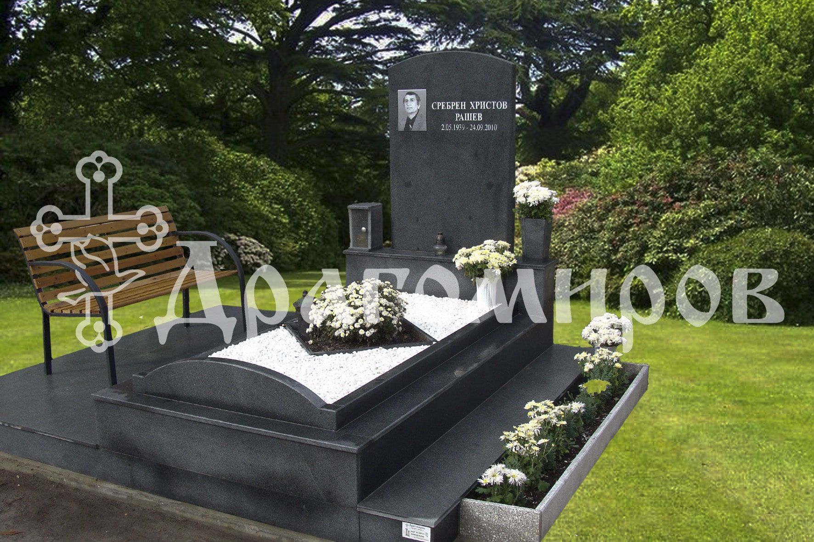
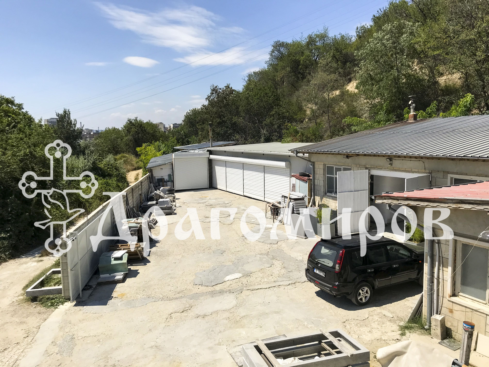
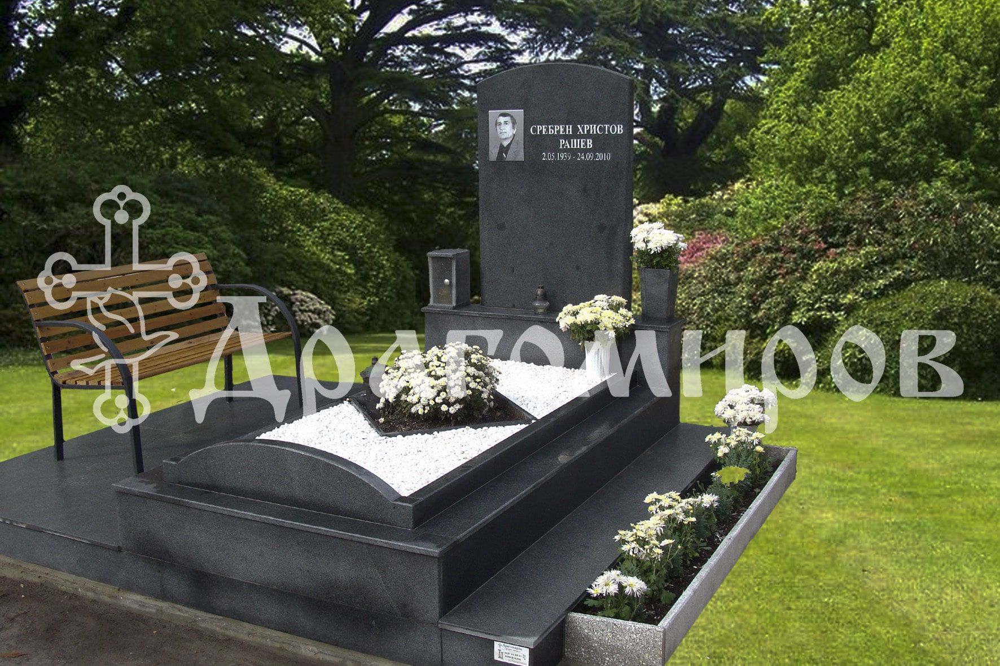
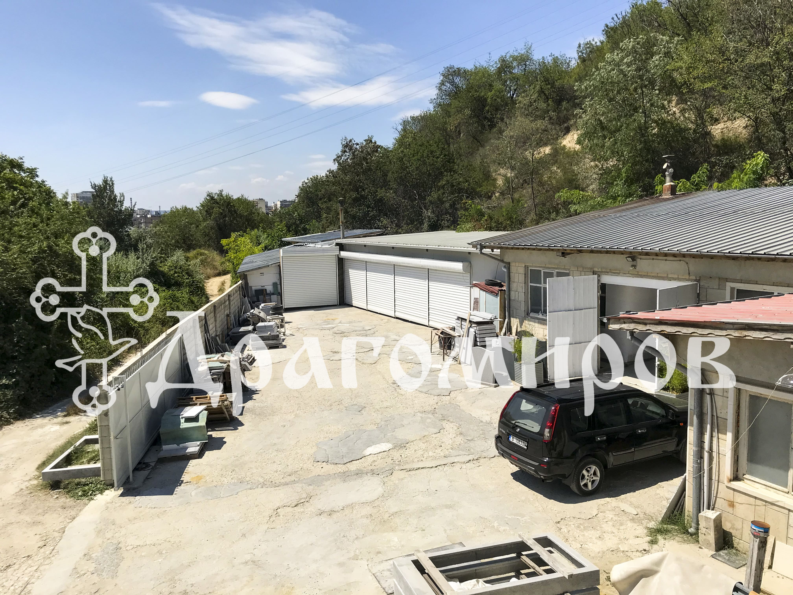

Всички погребения са различни и могат да варират значително в цената. Ние от Траурна Агенция Драгомиров сме готови да обсъдим с Вас всички възможности по открит и честен начин и да се съобразим с бюджета, с който разполагате Ние ще осигурим издаването на всички необходими документи и ще се погрижим за подготовката на Вашия починал близък. Оказваме съдействие при избор на гробно място, гробищен парк, ритуал и всички подробности по погребението. Агенцията разполага с лекар, който да напише съобщение за смърт (важно условие за организиране на погребението).
Мястото, на което можем да се връщаме при починал близък, обикновено носи утеха и топлина. Там можем да почетем паметта му, да поднесем цветя или просто да прекараме време в размисли. Траурна агенция Драгомиров разполага със собствен каменоделски цех и разнообразна селекция от паметници, както и с екип от професионалисти, които ще Ви съдействат при избора на подходящия паметник.

 




Траурна Агенция Драгомиров работи с Крематориум Варна, както и с всички крематориуми в страната и ще Ви съдейства при издаването на всички необходими документи.
Ние ще организираме вашата панихида, ще уредим свещеник, подавки и заравняване на гроба. Вярваме, че в такива моменти човек не бива да се тревожи за малките подробности, затова ще се погрижим за осигуряването на вино, жито, погача, както и на всички нужни траурни стоки.
Загубата на близък човек често идва внезапно и неочаквано като ни оставя съкрушени и неспособни да реагираме. За да Ви спестим грижи и притеснение, ние разполагаме със собствена хладилна камера в случай, че Ви се налага да изчакате с организирането на погребението.
Извършваме транспорт в страната и чужбина със специализирани и луксозни катафалки, както и с линейка за транспортиране на тежко болни и трудноподвижни хора (с или без медицински екип).
Предлагаме широка гама от ковчези, погребални комплекти и траурни венци от изкуствени и естествени цветя.